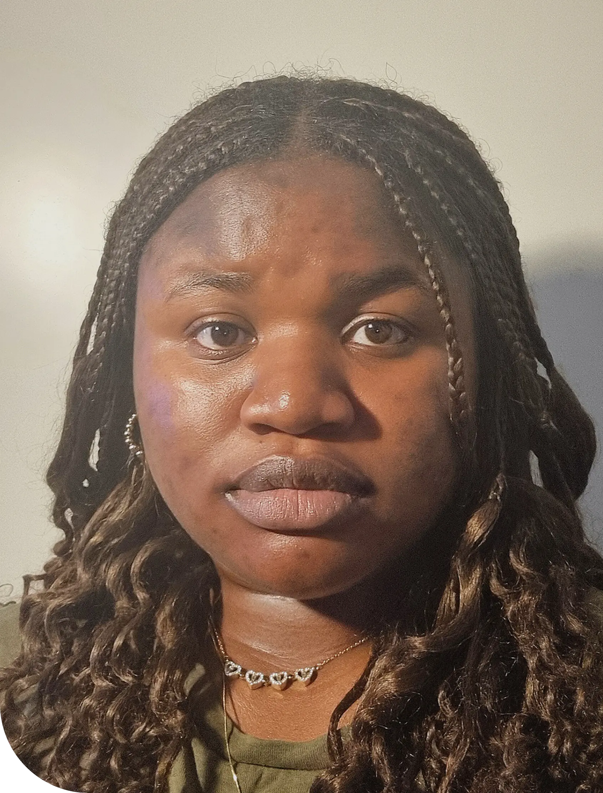

Om mig
Jeg hedder Victory Omoniyoyah Okosun
(Vik-tå-wri O-mo-ni-joja
Åh-KÅ-sun).
Jeg er 21 år gammel og multimediedesign-studerende.
Mit studie omhandler både frontendudvikling, design, content creation, video- og billedredigering og UI-design, men jeg er blevet virkelig glad for kodning. Det kommer mere naturligt til mig end de andre ting.
Jeg går på 3. semester, så der er stadig virkelig meget at lære, men det er dét jeg vil arbejde med (hvis jeg kan få lov for det store AI-uhyre).
